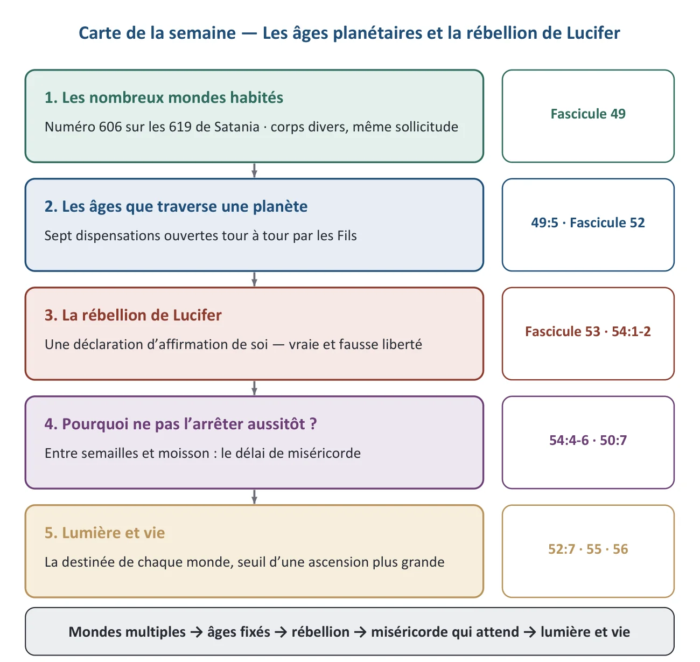
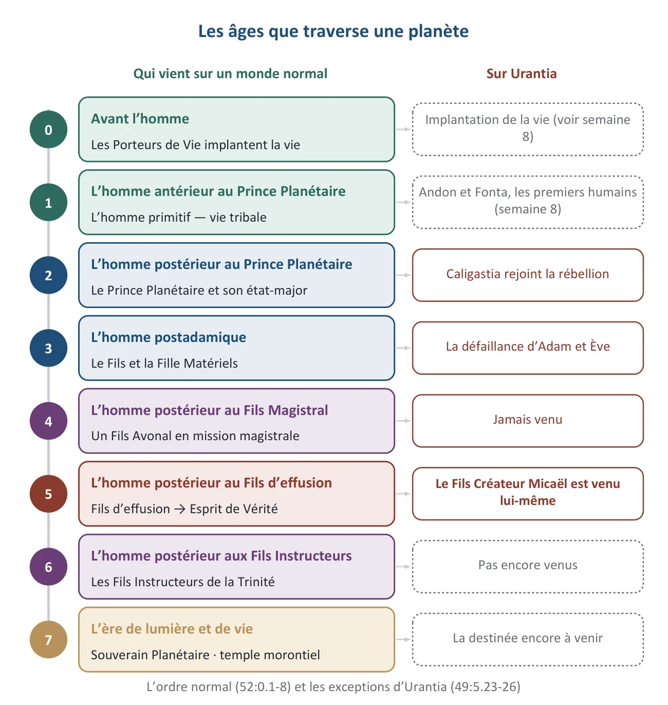

Les âges planétaires et la rébellion de Lucifer
Lecture : Fascicule 49 · Fascicule 52 · Fascicule 53 · Fascicule 54 · Fascicule 55 · Fascicule 56 (premier aperçu)

L’univers compte un très grand nombre de mondes où vivent des gens. Sur un monde normal, les Fils de Dieu arrivent les uns après les autres, et la planète traverse une série fixe d’âges vers l’ère de lumière et de vie. Mais il y a environ deux-cent-mille ans, Lucifer, le souverain de notre système, déclencha une rébellion au nom de la « liberté », et Urantia fut rejetée bien loin de cet ordre. Cette semaine, nous voyons en quoi la vraie liberté diffère de la fausse, pourquoi Dieu n’a pas mis fin à la rébellion tout de suite, et quelle destinée attend finalement chaque monde.
Récit d’ouverture
Un cultivateur qui sème un champ ne récolte pas le lendemain matin. Entretemps, les mauvaises herbes poussent avec le blé. Une main impatiente voudrait tout retourner d’un coup, mais un cultivateur sage attend la moisson, car arracher trop tôt déracinerait les bonnes pousses avec les mauvaises.
Les fascicules 49 à 55, que nous lisons cette semaine, racontent l’histoire d’un champ aussi vaste que l’univers. La semence de vie est semée sur d’innombrables mondes, et, à chaque âge, des ouvriers célestes viennent en prendre soin. Dans notre système, pourtant, celui à qui le champ avait été confié tenta de s’en faire le propriétaire. Ce fut la rébellion de Lucifer.
C’est une histoire sombre qui finit dans la lumière. La miséricorde cachée dans l’attente, et l’âge de lumière et de vie que chaque monde finit par atteindre : voilà où aboutit cette semaine.
1. Les nombreux mondes habités
Le six-cent-sixième monde
Au cours des semaines passées, nous avons suivi l’âme vers le haut après la mort, jusqu’aux mondes des maisons et à Jérusem, la capitale du système. Tournons maintenant les yeux vers le bas, vers les planètes où vivent des gens. Le Livre d’Urantia appelle ces planètes mondes habités, et notre système local, Satania, en compte un bon nombre.
Satania lui-même est un système inachevé ne contenant que 619 mondes habités qui sont numérotés dans l’ordre d’après la date de leur inscription comme mondes habités, comme mondes habités par des créatures volitives. C’est ainsi qu’Urantia reçut le numéro 606 de Satania, signifiant qu’elle est le six-cent-sixième monde de ce système local sur lequel le long processus évolutionnaire de la vie a culminé dans l’apparition d’êtres humains.49:0.3
Notre terre est l’un de quelque six-cents mondes voisins. Nous ne vivons pas seuls dans l’univers. Et sur chacun de ces mondes, l’apparition des êtres humains n’est pas un accident.
L’homme mortel n’est pas un accident évolutionnaire. Il existe un système précis, une loi universelle, pour déterminer le déroulement du plan de la vie planétaire sur les sphères de l’espace.49:1.6
Des enfants très divers, un seul Père
Les peuples des mondes habités diffèrent remarquablement. Le fascicule 49 explique que les corps sont conçus en fonction de leur milieu : l’atmosphère, la terre, l’eau et l’air, la gravité et la température. Il existe même des mondes dont les habitants ne respirent pas. Pourtant, une chose reste la même.
Les différences sont grandes entre les mortels des divers mondes, même parmi ceux qui appartiennent à des types intellectuels et physiques semblables, mais tous les mortels de dignité volitive sont des animaux bipèdes qui se tiennent debout.49:4.1
Le cerveau, lui aussi, se présente sous trois modèles fondamentaux. Ce passage nous tend un miroir.
Le cerveau et le système nerveux constituent la seule caractéristique uniforme des mortels. Il y a cependant trois organisations fondamentales du mécanisme cérébral : les types à un cerveau, à deux cerveaux et à trois cerveaux. Les Urantiens appartiennent au type à deux cerveaux ; ils sont un peu plus imaginatifs, aventureux et philosophes que les mortels à un cerveau, mais un peu moins spirituels, éthiques et adorateurs que les ordres à trois cerveaux.49:5.13
Curieux et aimant l’aventure, mais peu exercés à l’adoration : tel est le portrait que le livre fait de nous. Pourtant, si différents que soient les corps et les cerveaux, la sollicitude du ciel est la même pour tous.
Les différents types physiques et séries planétaires de mortels bénéficient tous pareillement du ministère des Ajusteurs de Pensée, des anges gardiens et des divers ordres de la foule des messagers de l’Esprit Infini. Tous sont pareillement libérés des liens charnels grâce à l’émancipation par la mort naturelle, et tous vont pareillement de là aux mondes morontiels d’évolution spirituelle et de progrès mental.49:6.1
Les enfants peuvent avoir une apparence différente, mais le Père est un. La diversité n’est pas un défaut de l’univers ; c’est sa richesse.
| Point de comparaison | Ce qui diffère d’un monde à l’autre | Ce que tous les mondes partagent |
|---|---|---|
| Corps | Sept types physiques adaptés à l’atmosphère, à la gravité et à la température | Des êtres debout qui marchent sur deux pieds |
| Habitat | L’eau, l’air, la terre, ou un mélange de terre et d’air | Une apparition par évolution |
| Cerveau | À un cerveau, à deux cerveaux (Urantia), à trois cerveaux | Le mental, don de l’Esprit Infini |
| Sollicitude du ciel | Le moment où arrivent les Fils | Ajusteurs, anges gardiens, mondes morontiels |
Mots nouveaux
- Monde habité : une planète où vivent des mortels doués de volonté. Urantia est le six-cent-sixième monde habité de Satania.
- Satania : le système local auquel appartient notre planète, avec Jérusem pour capitale. Un système tend vers environ mille mondes habités.
- Souverain Systémique : le Fils qui gouverne un système local. Jusqu’à la rébellion, Lucifer était le Souverain Systémique de Satania.
2. Les âges que traverse une planète
L’ordre des sept âges
De même qu’une école a ses classes, une planète a ses âges. Après que les Porteurs de Vie ont implanté la vie et que les êtres humains sont apparus, les Fils de Dieu arrivent dans un ordre fixe. Chaque arrivée ouvre un nouvel âge, appelé dispensation.
DEPUIS le commencement de la vie sur une planète évolutionnaire jusqu’au moment de son épanouissement final dans l’ère de lumière et de vie, au moins sept époques de vie humaine apparaissent sur la scène de l’action du monde. Ces âges successifs sont déterminés par les missions planétaires des Fils divins et, sur un monde habité moyen, ces époques apparaissent dans l’ordre suivant : 1. L’homme antérieur au Prince Planétaire. 2. L’homme postérieur au Prince Planétaire. 3. L’homme postadamique. 4. L’homme postérieur au Fils Magistral. 5. L’homme postérieur au Fils d’Effusion. 6. L’homme postérieur aux Fils Instructeurs. 7. L’ère de lumière et de vie.52:0.1-8
Le Prince Planétaire ouvre la voie à la civilisation et à la société, et Adam et Ève, le Fils et la Fille Matériels, élèvent la race dans son corps et son mental. Vient ensuite le tour des Fils du Paradis.
Quand le progrès intellectuel et éthique d’une race humaine a atteint les limites du développement évolutionnaire, un Fils Avonal Paradisiaque vient en mission magistrale. Et, plus tard, quand le statut spirituel de ce monde approche de la limite de son aboutissement naturel, la planète reçoit la visite d’un Fils d’effusion du Paradis. La mission principale d’un Fils d’effusion consiste à établir le statut planétaire, à donner libre essor à l’Esprit de Vérité pour qu’il fonctionne à l’échelle planétaire, et à assurer ainsi l’arrivée universelle des Ajusteurs de Pensée.49:5.25
Quand le Fils d’effusion a achevé sa mission, le monde atteint un grand tournant. L’esprit du Fils est répandu, et dès lors l’esprit de Dieu vient habiter en chaque personne.
Alors, l’Avonal d’effusion et le Micaël Créateur envoient leur esprit conjoint, l’Esprit de Vérité, dans le monde de l’effusion. … et simultanément a lieu la proclamation de l’édit d’effusion des Ajusteurs de Pensée. Après cela, toutes les créatures volitives de ce monde dont le mental est normal recevront un Ajusteur aussitôt qu’elles atteindront l’âge de la responsabilité morale, celui du choix spirituel.52:5.6
Cet ordre a ses raisons. Chaque Fils bâtit sur le terrain préparé par celui qui l’a précédé. L’élévation biologique vient d’abord, puis le progrès éthique, puis l’éveil spirituel. Le principe rencontré dans la semaine 1, selon lequel la révélation est donnée dans la mesure que les gens peuvent supporter, façonne ici toute l’histoire d’une planète.
Avant l’arrivée du Prince Planétaire, la religion est entièrement un processus évolutionnaire. Elle progresse ensuite tant par révélations graduelles que par croissance évolutionnaire. Chaque dispensation, chaque époque des mortels, reçoit une présentation élargie de la vérité spirituelle et d’éthique religieuse.52:2.3

Une planète hors de l’ordre
Si l’on compare ce calendrier type avec Urantia, presque chaque colonne est décalée. Caligastia, le Prince Planétaire, se joignit à la rébellion, et Adam et Ève n’achevèrent pas leur mission. La colonne suivante est plus surprenante encore.
Là encore, Urantia n’est pas dans la norme. Il n’y a jamais eu de mission magistrale sur votre monde, et votre Fils d’effusion n’appartenait pas à l’ordre des Avonals. Votre planète a joui de l’honneur insigne de devenir la planète domicile de mortel du Fils Souverain, Micaël de Nébadon.49:5.26
Sur la plus troublée des planètes, le Créateur de l’univers est venu en personne, comme un homme. Pourtant, sa venue n’a pas apporté tout de suite la paix sur la terre.
Le Fils d’effusion est le Prince de Paix. … Mais ces influences salutaires n’ont pas accompagné la venue de votre Fils d’effusion, Christ Micaël. Urantia ne procède pas selon l’ordre normal. Votre monde ne marche pas au pas dans la procession planétaire.52:6.1
Les guerres et les divisions de notre monde sont les signes que cette planète a été gravement blessée très tôt dans son histoire. Cette blessure est le sujet de la section suivante.
| Âge | Qui vient | Ce que l’âge apporte |
|---|---|---|
| 1 Avant le Prince Planétaire | La sollicitude des Porteurs de Vie | Apparition de l’homme primitif ; vie tribale |
| 2 Après le Prince Planétaire | Le Prince Planétaire et son état-major | Civilisation, foyer, première religion révélée |
| 3 Après Adam | Le Fils et la Fille Matériels | Amélioration raciale, inventions, internationalisme |
| 4 Après le Fils Magistral | Un Fils Avonal | Libération économique, apogée intellectuelle |
| 5 Après le Fils d’effusion | Le Fils d’effusion | L’Esprit de Vérité ; des Ajusteurs pour tous |
| 6 Après les Fils Instructeurs | Les Fils Instructeurs de la Trinité | La loyauté spirituelle devient universelle |
| 7 Lumière et vie | L’âge du Souverain Planétaire | Paix établie et croissance continue |
Mots nouveaux
- Dispensation : une période de l’histoire planétaire ouverte par l’arrivée d’un Fils de Dieu sur un monde. Chaque nouvelle arrivée commence une nouvelle dispensation.
- Fils Magistral : le Fils du Paradis, aussi appelé Avonal, que nous avons rencontré par son nom dans la semaine 4. Il juge les âges d’une planète et vient parfois dans la chair en mission magistrale.
- Fils d’effusion : un Fils du Paradis qui s’effuse sur un monde évolutionnaire. Sur Urantia, c’est le Fils Créateur Micaël qui est venu en personne.
En regard de la Bible
Jésus dit : « Ne croyez pas que je sois venu apporter la paix sur la terre » (Matthieu 10:34), et il annonça d’avance « des guerres et des bruits de guerres » (Matthieu 24:6). Le fascicule 52 explique ces paroles par le fait qu’Urantia ne marche pas au pas de l’ordre planétaire normal (52:6.1). Le Prince de Paix est venu, et pourtant la paix est retardée ; le Livre d’Urantia en cherche la raison dans l’histoire de la planète.
3. La rébellion de Lucifer — une déclaration de fausse liberté
La chute d’un Fils brillant
Lucifer n’était pas mauvais au départ. Il était l’une des personnalités remarquables parmi les Fils Lanonandeks créés dans l’univers local.
LUCIFER était un brillant Fils Lanonandek primaire de Nébadon. Il avait l’expérience du service dans de nombreux systèmes ; il avait été un haut conseiller de son groupe et s’était distingué par sa sagesse, sa sagacité et son efficacité. … Partant de ce début magnifique et commettant le mal et faisant des erreurs, il s’adonna au péché, et il compte maintenant parmi les trois Souverains Systémiques de Nébadon qui ont succombé à la pression du moi et se sont rendus aux sophismes de la fausse liberté personnelle — rejet de l’allégeance à l’univers, négligence des obligations fraternelles, aveuglement aux relations cosmiques.53:0.1
Comment un tel être a-t-il pu tomber ? Le fascicule 53 n’en cherche pas la cause dans les circonstances extérieures. Rien dans Satania n’invitait particulièrement à la rébellion.
Il est très difficile de citer la cause ou les causes exactes qui culminèrent finalement dans la rébellion de Lucifer. Nous ne sommes certains que d’une chose, c’est que les premiers commencements, quels qu’ils aient été, eurent leur origine dans le mental de Lucifer. Il a dû exister un orgueil du moi qui s’est nourri au point de tromper Lucifer sur lui-même, de sorte qu’il se persuada réellement pendant un temps que sa rébellion projetée agirait effectivement pour le bien du système, et peut-être de l’univers. … On lui fournit longtemps des occasions de se repentir, mais seuls quelques-uns de ses subordonnés acceptèrent la miséricorde offerte.53:2.5
L’expression à remarquer est « tromper Lucifer sur lui-même ». Au début, Lucifer croyait faire ce qui était juste. L’orgueil marche toujours derrière une cause plausible. Puis, à un certain moment, il était allé trop loin pour revenir en arrière.
Les trois revendications du manifeste de Lucifer
La rébellion éclata il y a environ deux-cent-mille ans, sous la forme d’une déclaration publique lors du conclave annuel sur Jérusem.
Quels qu’eussent été les motifs initiaux de trouble dans le cœur de Lucifer et de Satan, la révolte se concrétisa sous forme de la Déclaration Luciférienne de Liberté. La cause des rebelles fut exposée sous trois rubriques :53:3.1
La première revendication concernait Dieu.
1. La réalité du Père Universel. Lucifer prétendit que le Père Universel n’existait pas réellement, que la gravité physique et l’énergie d’espace étaient inhérentes à l’univers, et que le Père était un mythe inventé par les Fils du Paradis pour leur permettre de conserver le pouvoir sur les univers au nom du Père.53:3.2
La deuxième concernait le gouvernement de l’univers.
2. Le gouvernement universel de Micaël, le Fils Créateur. Lucifer soutint que les systèmes locaux devaient être autonomes. … Il accepta de reconnaitre Micaël comme son père-Créateur, mais non comme son Dieu et son chef légitime.53:3.3
La troisième nous visait directement, nous, les mortels ascendants.
3. L’attaque contre le plan universel d’éducation des mortels ascendants. Lucifer soutint que l’on dépensait beaucoup trop de temps et d’énergie à instruire si complètement les mortels ascendants dans les principes d’administration de l’univers, principes qu’il qualifiait de peu éthiques et de malsains. … Il soutint que les ascendeurs devaient jouir de la liberté de déterminer leur sort eux-mêmes.53:3.6
Résumées en une ligne, les trois revendications disent : il n’y a pas de Père, le gouvernement d’en haut est une ingérence, et la longue formation est un gaspillage. Le mot d’ordre qui les reliait était l’affirmation de soi.
L’affirmation de soi fut le cri de guerre de la rébellion de Lucifer.53:4.2
Gabriel ne répondit pas par la force. Il annonça seulement que chaque être serait libre de choisir.
Gabriel était présent en personne tout au cours de ces débats déloyaux, et il annonça simplement qu’au moment opportun, il parlerait pour Micaël, que le choix de tous les êtres serait libre et aucunement forcé, et que le « gouvernement des Fils pour le Père ne désirait la loyauté et la dévotion que si elles étaient volontaires, données de tout cœur et à l’épreuve des sophismes ».53:4.6

La rébellion se répandit dans tout le système. Les princes de trente-sept planètes se rangèrent du côté de Lucifer, et beaucoup d’anges passèrent dans son camp. Pourtant, un groupe ne vacilla jamais.
Les ascendeurs mortels étaient vulnérables, mais résistèrent mieux que les esprits inférieurs aux sophismes de la rébellion. … Mais nul citoyen ascendant de Satania résidant à Jérusem ne participa à la rébellion, et cette abstention s’inscrit à la gloire de la sagesse du plan d’ascension.53:7.10
Quand Lanaforge, le nouveau Souverain Systémique, arriva un peu plus de deux ans plus tard, voici la première nouvelle qu’il envoya au siège de la constellation.
« Aucun citoyen de Jérusem n’a été perdu. Tous les mortels ascendants ont survécu aux ardentes tribulations et sont sortis triomphants et entièrement victorieux de l’épreuve décisive. » Ce message fut envoyé à Salvington, à Uversa et au Paradis pour assurer que l’expérience de survie de l’ascension des mortels constituait la plus grande sécurité contre la rébellion et la meilleure sauvegarde contre le péché.53:7.12
Ceux qui avaient reçu précisément la formation ascensionnelle que Lucifer tournait en dérision comme inutile tinrent le plus fermement. La vérité acquise par l’expérience est plus forte que les sophismes éblouissants.
Vraie et fausse liberté
« Liberté » était écrit sur la bannière de Lucifer. C’est pourquoi le fascicule 54 dit que la confusion la plus profonde laissée par la rébellion est l’incapacité de distinguer la vraie liberté de la fausse.
La vraie liberté est la quête des âges et la récompense du progrès évolutionnaire. La fausse liberté est la subtile duperie de l’erreur du temps et du mal de l’espace.54:1.2
Il trace ensuite la ligne qui les sépare.
La vraie liberté est associée à un sincère respect de soi ; la fausse liberté est la compagne de l’admiration de soi. La vraie liberté est le fruit de la maitrise de soi ; la fausse liberté est la prétention de s’affirmer soi-même. La maitrise de soi conduit au service altruiste ; l’admiration de soi tend à exploiter autrui afin d’assurer des avantages personnels à l’individu dans l’erreur, disposé à sacrifier l’accomplissement dans la droiture à la possession d’un pouvoir injuste sur ses compagnons.54:1.6
La fausse liberté commence par « le droit de faire ce qui me plait » et finit par la domination des autres. La vraie liberté commence par la maitrise de soi et porte du fruit dans le service des autres. Quelle fut donc exactement l’erreur de Lucifer ?
La folie de Lucifer fut de tenter l’infaisable, de court-circuiter le temps dans un univers expérientiel. … En résumé, Lucifer aurait voulu enlever aux hommes et aux anges ce que Dieu leur a donné, c’est-à-dire le divin privilège de participer à la création de leur propre destinée et à la destinée de ce système local de mondes habités.54:2.3-4
« Court-circuiter le temps », c’est sauter le processus pour s’emparer du résultat, comme un courant qui saute par un court-circuit. L’ironie est qu’une rébellion qui criait à la liberté a tenté d’enlever à chaque être la vraie liberté de participer, par sa propre croissance, à l’édification de l’univers. Le fascicule 54 règle la question en une phrase.
Nul être, dans tout l’univers, n’a légalement la liberté de priver un autre être de la vraie liberté, du droit d’aimer et d’être aimé, du privilège d’adorer Dieu et de servir son prochain.54:2.5
| Point de comparaison | Vraie liberté | Fausse liberté |
|---|---|---|
| Compagne | Un sincère respect de soi | L’admiration de soi |
| Racine | Le fruit de la maitrise de soi | La prétention de s’affirmer soi-même |
| Fruit | Le service altruiste | L’exploitation d’autrui, un pouvoir injuste |
| Temps | La récompense d’un long progrès | L’impatience de sauter le processus |
| Rapport à la réalité | Respecte la justice, l’équité et la fraternité | Coupée de la réalité et du devoir, elle se détruit elle-même |
Mots nouveaux
- Fils Lanonandek : l’ordre de Fils de l’univers local rencontré dans la semaine 5 ; les Souverains Systémiques et les Princes Planétaires en sont issus. Lucifer, Satan et Caligastia étaient tous des Lanonandeks.
- Manifeste de Lucifer : la déclaration de rébellion que Lucifer publia sur Jérusem, aussi appelée Déclaration de Liberté. Il attaquait la réalité du Père, le gouvernement de Micaël et le plan d’ascension des mortels.
- Gabriel : le chef exécutif de l’univers local de Nébadon. Pendant la rébellion, il conduisit les armées loyales au nom de Micaël.
En regard de la Bible
Ésaïe chante : « Te voilà tombé du ciel, Astre brillant, fils de l’aurore ! » (Ésaïe 14:12), et l’Apocalypse rapporte : « Et il y eut guerre dans le ciel. Michel et ses anges combattirent contre le dragon » (Apocalypse 12:7). Le fascicule 53 relie ces versets à la rébellion de Lucifer et explique que la « guerre dans le ciel » ne fut pas une bataille d’épées, mais une lutte entre la vérité et les sophismes, dont l’enjeu était la vie éternelle (53:5.6-7).
4. Pourquoi ne l’a-t-on pas arrêtée tout de suite ? — Le délai de miséricorde
Un Père qui attend
Presque tous ceux qui lisent cette partie posent la même question : si Dieu est tout-puissant, pourquoi n’a-t-il pas mis fin à la rébellion dès le premier jour ? L’auteur du fascicule 54 n’évite pas la question. Il commence par évoquer le cœur d’un parent.
Des parents ayant engendré et élevé des enfants seront mieux à même de comprendre pourquoi Micaël, un Créateur-père, peut être lent à condamner et à détruire ses propres Fils. L’histoire du fils prodigue racontée par Jésus illustre bien comment un père aimant peut attendre longtemps le repentir de son enfant égaré.54:4.2
Il montre ensuite comment la justice et la miséricorde agissent ensemble dans le temps. Ici revient le cultivateur de notre récit d’ouverture.
La justice suprême peut agir instantanément lorsqu’elle n’est pas tempérée par la miséricorde divine. Le ministère de miséricorde auprès des enfants du temps et de l’espace prévoit toujours ce délai, cet intervalle salutaire entre les semailles et la moisson. Si la graine semée est bonne, ce délai permet la mise à l’épreuve et l’affermissement du caractère ; si la graine semée est mauvaise, ce délai de miséricorde laisse le temps au repentir et à la rectification. … Ce frein de la miséricorde sur la justice prouve que Dieu est amour, que ce Dieu d’amour domine les univers, et qu’il contrôle en miséricorde le destin et le jugement de toutes ses créatures.54:4.6

Les raisons du délai
Il faut d’abord voir où en était Micaël à cette époque. Il n’avait pas encore achevé sa septième effusion, sa vie sur Urantia.
À l’époque de cette rébellion et des deux précédentes, il n’existait pas d’autorité souveraine absolue et personnelle dans l’univers de Nébadon. Micaël gérait par droit divin comme vice-gérant du Père Universel, mais pas encore en vertu de son propre droit personnel.53:5.2
La section 5 du fascicule 54 donne douze raisons pour lesquelles les rebelles ne furent pas mis hors d’état de nuire plus tôt. Voici les premières :
1. La miséricorde exige que tout malfaiteur ait un temps suffisant pour élaborer une attitude délibérée et murement pesée au sujet de ses mauvaises pensées et de ses actes de péché. 2. La justice suprême est dominée par un amour de Père, et c’est pourquoi la justice ne détruira jamais ce que la miséricorde peut sauver. Le temps nécessaire pour accepter le salut est accordé à tout malfaiteur. 3. Nul père affectueux n’inflige jamais une punition précipitée à un membre de sa famille qui s’est trompé. La patience ne peut fonctionner indépendamment du temps.54:5.2-4
L’attente n’était pas seulement pour les rebelles. D’innombrables êtres qui hésitaient en marge avaient besoin de temps pour réfléchir et choisir. Si la rébellion avait été écrasée par la force, des germes de doute seraient restés enfouis dans le sol.
Pour laisser les portes de l’ascension au Paradis ouvertes aux êtres de Norlatiadek, il était nécessaire de prévoir le plein développement de la rébellion et de s’assurer de la complète détermination de l’attitude de tous les êtres qu’elle toucherait d’une manière quelconque.54:5.10
Une autre raison est que notre sens du temps est étroit.
Du point de vue d’Uversa, où le litige est en suspens, on peut estimer le délai relativement en disant que la justice a été saisie du crime de Lucifer deux secondes et demie après qu’il fut commis. Du point de vue du Paradis, le jugement est concomitant avec l’acte.54:5.13
Pour nous, deux-cent-mille ans semblent interminables, mais devant les tribunaux du superunivers, c’est un clin d’œil. L’auteur ajoute que l’on enseigne quarante-huit raisons sur Uversa, et qu’il y en a sans doute tout autant que nous ne connaissons pas (54:5.14).
Liés ensemble comme une seule famille
Une question demeure : pourquoi les innocents devraient-ils en partager le prix ? Le fascicule 54 répond par l’image d’une famille.
Si le père aimant d’une grande famille choisit de se montrer miséricordieux envers l’un de ses enfants coupable d’un grave méfait, il peut arriver que l’octroi de la miséricorde à cet enfant qui se conduit mal impose temporairement des privations à tous les autres enfants qui se conduisent bien. Ces éventualités sont inévitables ; le risque est inséparable de la réalité consistant à avoir un père affectueux et à être membre d’un groupe familial.54:6.3
Être liés ensemble comme une famille, c’est partager à la fois la joie et la peine. Mais cette peine a une limite claire.
Mais il est bon de clarifier une chose : … vous pouvez vous fier à la certitude éternelle que ces tribulations ne sont que des afflictions temporaires. Aucune de ces conséquences de la vie fraternelle, l’écart de conduite des membres de votre groupe, ne peut jamais compromettre vos perspectives éternelles ni vous priver le moins du monde de votre droit divin de monter au Paradis et d’atteindre Dieu.54:6.4
La faute d’autrui peut blesser une vie, mais elle ne peut enlever à personne son éternité. Et l’attente a porté du fruit.
Au début, le bouleversement luciférien apparut comme une pure catastrophe pour le système et pour l’univers. Graduellement, ses avantages commencèrent à s’accumuler. … Aujourd’hui, les Melchizédeks enseignent que le bien résultant de la rébellion de Satania équivaut à plus de mille fois la somme de tout son mal.54:6.6
La fin de la rébellion, et le don de l’isolement
Quand la rébellion a-t-elle pris fin en principe ? Le fascicule 53 situe ce moment lors de la tentation dans le désert, quand Jésus, le Fils de l’Homme, repoussa les propositions de Lucifer.
La survie des mortels et la sécurité des anges furent affermies quand votre Maitre, répondant aux propositions lucifériennes, répliqua calmement avec une assurance divine : « Arrière de moi, Satan. » Ce fut, en principe, la véritable fin de la rébellion de Lucifer.53:8.4
Après la rébellion, Urantia devint un monde isolé, ses circuits vers les autres mondes coupés. Même cette apparente infortune cache un don.
Mais l’isolement de ces sphères offre à leurs races une occasion unique d’exercer leur foi et de développer une qualité particulière de confiance dans la sécurité cosmique, qui ne dépend ni de la vue ni d’aucune autre considération matérielle. Il peut arriver finalement que les créatures humaines venant des mondes mis en quarantaine par suite de rébellion aient une chance extrême.50:7.1
Ces ascendeurs reçoivent un nom particulier.
Sur Jérusem, les ascendeurs des mondes isolés occupent un secteur résidentiel privé et sont connus sous le nom d’agondontaires, qui signifie créatures volitives évolutionnaires pouvant croire sans voir, persévérer dans l’isolement et triompher de difficultés quasi insurmontables, même lorsqu’ils sont seuls.50:7.2
Il n’existe pas de meilleure école pour apprendre à croire sans voir. Le fascicule 54 clôt la question de l’attente en quelques mots.
Dans un univers dominé par la miséricorde, la justice est peut-être lente, mais elle est certaine.54:4.8
Mots nouveaux
- Quarantaine : la mesure qui a coupé des circuits de l’univers les planètes impliquées dans la rébellion. Urantia est l’une d’elles.
- Agondontaire : le nom donné aux ascendeurs des mondes isolés qui ont cru sans voir et persévéré seuls.
- Gabriel contre Lucifer : le procès en cours devant le tribunal du superunivers sur Uversa, qui concerne le sort final des chefs rebelles.
Dissiper un malentendu
Un malentendu courant : Dieu a créé le mal, ou du moins il a permis la rébellion. Ce que dit le Livre d’Urantia : les Dieux ne créent pas le mal, et ils ne permettent pas non plus le péché et la rébellion (54:0.2). Ils ont donné le libre arbitre, et pour que cette liberté soit réelle, il faut aussi que la possibilité de mal choisir existe (54:3.1). La miséricorde laisse simplement à ces choix le temps de murir ; elle n’approuve jamais le mal.
Dissiper un malentendu
Un malentendu courant : le diable s’empare des gens et les force à pécher. Ce que dit le Livre d’Urantia : nul esprit déchu n’a le pouvoir d’envahir le mental d’un enfant de Dieu, et la foi est une armure efficace contre le péché (53:8.8). Bien des choses que l’on impute au diable viennent des tendances humaines (53:8.9).
5. Lumière et vie — la destinée d’une planète
Là où va chaque monde
L’histoire de la rébellion et de la confusion ne s’achève pas dans le désespoir. Le dernier chapitre des sept âges est la promesse qu’aucun monde n’est abandonné.
Peu importent l’histoire naturelle spéciale d’une planète individuelle et le fait qu’un royaume ait été entièrement loyal, souillé de mal ou maudit par le péché — peu importent les antécédents — tôt ou tard, la grâce de Dieu et le ministère des anges feront arriver le jour de la venue des Fils Instructeurs de la Trinité ; et leur départ à la suite de leur mission finale inaugurera l’âge superbe de lumière et de vie.52:7.14
Même un monde « maudit par le péché » n’est pas laissé de côté. Urantia aussi atteindra cet âge, même tard et par un chemin plus long. Le fascicule 55 ne cache pas les montagnes qui se dressent encore devant nous.
Le grand handicap auquel Urantia doit faire face pour atteindre la haute destinée planétaire de lumière et de vie provient des problèmes de la maladie, de la dégénérescence, de la guerre, des races multicolores et du multilinguisme.55:3.21
À quoi ressemble un monde de lumière et de vie
Sur un monde ancré dans la lumière et la vie, même la mort change.
La mort physique naturelle n’est pas inévitable pour les humains. La majorité des êtres évolutionnaires avancés, citoyens de mondes parvenus à l’ère finale de lumière et de vie, ne meurent pas ; ils sont transférés directement de la vie dans la chair à l’existence morontielle.55:2.1
Cela ne fait pas pour autant d’un tel monde un ciel sans défaut.
Durant cet âge de lumière et de vie, le monde prospère de plus en plus sous le règne paternel du Souverain Planétaire. À ces époques, les mondes progressent avec la force vive d’un seul langage, d’une seule religion et, sur les sphères normales, d’une seule race ; mais cet âge n’est pas parfait.55:3.1
Il y a encore des hôpitaux, des accidents arrivent encore, et il y a encore un mal à choisir ou à refuser. Le fascicule 55 met en garde plus d’une fois contre la tentation de prendre un tel monde pour le ciel.
Mais de tels êtres sont encore mortels ; ils continuent à respirer, manger, boire et dormir. Cette grande évolution n’est pas le ciel, mais un avant-gout sublime des mondes divins que l’on rencontrera dans l’ascension vers le Paradis.55:6.2
La lumière et la vie ne sont pas une fin, mais le seuil d’un voyage plus grand. À partir de la planète, l’ancrage s’élargit en sept stades, au système, à la constellation, à l’univers local et au-delà (55:0.4-11).

Que serait-ce de voir un tel monde, ne serait-ce qu’une fois ?
Si les mortels d’Urantia, monde désaxé, pouvaient seulement contempler une planète plus évoluée, ancrée depuis longtemps dans la lumière et la vie, ils ne mettraient plus jamais en doute la sagesse du plan évolutionnaire de la création. Même si la progression éternelle des créatures n’avait pas de futur, les réalisations évolutionnaires superbes des races humaines sur les mondes bien établis d’accomplissements perfectionnés justifieraient amplement la création de l’homme sur les planètes du temps et de l’espace.55:6.9
Une histoire qui converge vers l’unité
Le fascicule 56, dernier fascicule de la deuxième partie, rassemble toute cette diversité et tous ces détours. Les nombreux mondes, les sept âges, la rébellion et le redressement deviennent tous une seule histoire dans le Dieu unique. Le fascicule 56 désigne le point culminant de cette histoire par le mot beauté.
La beauté suprême, le summum de l’art fini, est l’épopée de l’unification de l’immensité des extrêmes cosmiques, le Créateur et la créature. L’homme trouvant Dieu et Dieu trouvant l’homme — la créature devenant parfaite comme le Créateur — tel est l’accomplissement céleste de la beauté suprême, l’aboutissement de l’apogée de l’art cosmique.56:10.3
Le cultivateur attend parce qu’il a confiance dans le jour de la moisson. L’histoire sinueuse de notre planète avance, elle aussi, vers cette moisson. À partir de la semaine prochaine, nous entrons dans la troisième partie et suivons depuis le début l’histoire de cette planète même, Urantia.
Points clés de la semaine
- Satania compte 619 mondes habités, et Urantia est le six-cent-sixième. Les corps et les cerveaux diffèrent d’un monde à l’autre, mais la sollicitude du ciel est la même.
- Un monde normal traverse sept âges, à mesure qu’arrivent tour à tour le Prince Planétaire, Adam et Ève, un Fils Magistral, un Fils d’effusion et les Fils Instructeurs.
- Urantia est sortie de l’ordre par la rébellion du Prince Planétaire et la défaillance d’Adam, et pourtant elle a été honorée par la venue en personne, comme homme, du Créateur Micaël.
- La rébellion de Lucifer est née d’un orgueil parvenu jusqu’à se tromper soi-même ; elle a nié la réalité du Père, le gouvernement de Micaël et le plan d’ascension.
- La vraie liberté est le fruit de la maitrise de soi et conduit au service ; la fausse liberté part de l’affirmation de soi et exploite autrui.
- La rébellion n’a pas été arrêtée tout de suite parce que la miséricorde donne à chaque être le temps de choisir, et ses épreuves ne peuvent enlever à personne son avenir éternel.
- Chaque monde finit par atteindre la lumière et la vie, et ce n’est pas une fin, mais le seuil d’une ascension plus grande.
Questions à méditer
- À la mesure de 54:1.6, ce que vous appelez « liberté » ces temps-ci est-il le fruit de la maitrise de soi ou la prétention de s’affirmer soi-même ?
- Comment l’idée que l’attente est miséricorde (54:4.6) éclaire-t-elle votre façon de faire face aux changements lents dans votre propre vie ou aux torts des autres ?
- Pourquoi croire sans voir sur une planète isolée (50:7.2) pourrait-il être une chance plutôt qu’une infortune ?
À lire pour la semaine prochaine
- Fascicules 57–67 — L’aube de la planète, le matin de l’humanité : la naissance d’Urantia et les débuts de la vie, les premiers êtres humains et l’âge du Prince Planétaire